측량기능사 (2008-02-03 기출문제)
1과목: 임의 구분
1. 다음 <설명>은 삼각점의 선점에 대한 내용이다. ( )안에 알맞은 것은?
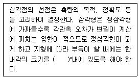
- 10~70
- 20~80
- 30~120
- 40~150
(정답률: 87%)

2. 평판 측량에서 지상측선 방향과 도상측선 방향을 일치시키는 작업은?
- 표정
- 정준
- 구심
- 시준
(정답률: 48%)
3. 삼각 측량의 작업 순서로 옳은 것은?
- 답사 및 선점 - 조표 - 관측 - 계산 - 성과표 작성
- 조표 - 성과표 작성 - 답사 및 선점 - 관측 - 계산
- 조표 - 관측 - 답사 및 선점 - 성과표 작성 - 계산
- 답사 및 선점 - 관측 - 조표 - 계산 - 성과표 작성
(정답률: 77%)
4. 평판 측량에서 사용되는 앨리데이드에 관한 설명으로 틀린 것은?
- 지름 0.2mm의 시준사와 3개의 시준공으로 되어 있다.
- 축척자는 방향선을 긋고 시준점을 표시할 때 사용된다.
- 기포관에서 기포관의 곡률 반지름은 15m~20m로 평판을 세울 때 구심을 맞추기 위해 사용된다.
- 정준간은 측량 도중 수평이 들렸을 때 앨리데이드의 수평을 교정하는데 사용된다.
(정답률: 56%)
5. 표에서 합위거, 합경거를 이용하여 폐합 트래버스의 면적을 계산한 것은? (단, 단위는 m이다.)
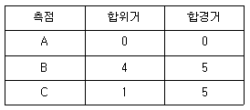
- 30.5m2
- 15.5m2
- 7.5m2
- 4.0m2
(정답률: 46%)
6. 1각을 측정 횟수가 다르게 측정하여 다음의 값을 얻었다. 최확값은?
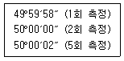
- 49°59′59″
- 50°00′00″
- 50°00′01″
- 50°00′02″
(정답률: 64%)
7. 수준측량시 한 측점에서 동시에 전시와 후시를 모두 취하는 점을 무엇이라 하는가?
- 전시점
- 후시점
- 중간점
- 이기점
(정답률: 78%)
8. 삼각망의 제2조정각 54°56′15″에 대한 표차 값은?
- 11.54
- 12.81
- 13.45
- 14.77
(정답률: 23%)
9. 임의 측선의 방위각 계산에서 진행방향 오른쪽 교각을 측정했을 때의 방위각 계산은?
- 전측선 방위각 + 180°- 그측점의 교각
- 전측선 방위각 × 180°+ 그측점의 교각
- 전측선 방위각 × 180°- 그측점의 교각
- 전측선 방위각 - 180°+ 그측점의 교각
(정답률: 61%)
10. 250m의 거리를 50m 줄자로 측정하였다. 그러나 50m 측점에 우연오차가 ±1cm 발생하였다면 전체 길이에 대한 우연오차는 얼마인가?
- ± 5cm
- ± 4cm
- ± 3.5cm
- ± 2.2cm
(정답률: 35%)
11. 교호 수준 측량을 하여 그림과 같은 성과를 얻었다. 이때 A점과 B점의 표고는? (단, a1=1.745m, a2=2.452m, b1=1.423m, b2=2.118m)
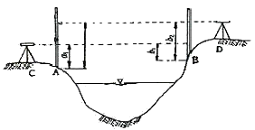
- 0.251m
- 0.289m
- 0.328m
- 0.354m
(정답률: 28%)
12. 2점 간의 거리를 A가 3회 측정하여 30.4m, B가 2회 측정하여 28.4m를 얻었다. 이 거리의 최확값은?
- 28.6m
- 29.4m
- 29.6m
- 30.2m
(정답률: 52%)
13. 두 개의 수준점 A점과 B점에서 C점의 높이를 구하기 위하여 직접 수준 측량을 하여 A점으로부터 높이 75.363m(거리2km), B점으로부터 높이 75.377m(거리5km)의 결과를 얻었을 때 C점의 보정된 높이는 얼마인가?
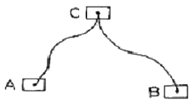
- 75.364m
- 75.367m
- 75.370m
- 75.373m
(정답률: 66%)
14. 다음 중 측량 목적에 따른 분류와 거리가 먼 것은?
- GPS 측량
- 지형 측량
- 노선 측량
- 항만 측량
(정답률: 64%)
15. 축척 1:100 으로 평판 측량을 할 때, 앨리데이드의 외심거리 θ=20mm에 의해 생기는 허용 오차는?
- 0.2mm
- 0.4mm
- 0.6mm
- 0.7mm
(정답률: 64%)
16. 수준측량 결과 발생하는 고저의 오차는 거리와 어떤 관계를 갖는가?
- 거리에 비례한다.
- 거리에 반비례한다.
- 거리의 제곱근에 비례한다.
- 거리의 제곱근에 반비례한다.
(정답률: 44%)
17. 우리나라의 기본 수준 측량의 1등 수준 측량에 대한 수준점은 보통 얼마마다 설치되어 있는가?
- 100~500m
- 2~4km
- 10~15km
- 50~60km
(정답률: 60%)
18. 우리나라 측량의 평면 직각 좌표계의 기본 원점 중 동부 원점의 위치는?
- 동경 125° 북위 38°
- 동경 129° 북위 38°
- 동경 38° 북위 125°
- 동경 38° 북위 129°
(정답률: 77%)
19. 트래버스 측량의 측각법 중 교각법에 대한 설명으로 옳은 것은?
- 앞 측선의 연장선과 다음 측선이 이루는 각을 측정하는 방법이다.
- 자북을 기준으로 시계방향으로 측정한 수평각을 측정하는 방법이다.
- 서로 이웃하는 두 개의 측선이 만드는 각을 측정하는 방법이다.
- 남북을 기준으로 좌우측으로 각각 측정하는 방법이다.
(정답률: 73%)
20. 다음 중 트래버스 측량에 관한 설명 중 옳은 것은?
- 컴퍼스 법칙은 각과 거리 측량의 정도가 같은 경우에 이용된다.
- 위거 = 거리 ×(sin θ)(여기서, θ=방위각)
- N 36° W 인 측선의 경거는 (+)이다.
- 방위각은 90° 이상의 각이 있을 수 없다.
(정답률: 53%)
2과목: 임의 구분
21. 다음 중 축척이 가장 큰 것은?
- 1/500
- 1/1,000
- 1/3,000
- 1/5,000
(정답률: 74%)
22. 삼각형의 내각을 측정하였더니 ∠A=68° 01′20″, ∠B=51°59′10″, ∠C=60°00′15″가 되었다. 각 보정후의 ∠B는?
- 51°59′25″
- 51°58′25″
- 51°58′55″
- 51°59′35″
(정답률: 39%)
23. 트래버스 측량에서 경거 및 위거의 용도가 아닌 것은?
- 오차 및 정도의 계산
- 실측도의 좌표 계산
- 오차의 합리적 배분
- 측점의 표고 계산
(정답률: 39%)
24. 직각좌표에 잇어서 2점 A(2.0,4.0m), B(-3.0,-1.0m)간의 거리는?
- 7.07m
- 7.48m
- 8.08m
- 9.04m
(정답률: 36%)
25. 그림과 같은 수준 측량에서 A와 B의 고저차는?
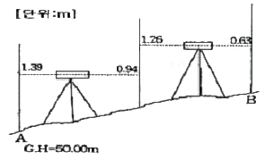
- 1.78m
- 1.65m
- 1.44m
- 1.08m
(정답률: 49%)
26. 그림과 같은 결합 트래버스에서 AC와 BD의 방위각이 Wa, 쮸이고 A에서 순서대로 교각이 α1, α2, …αn 이면 측점 오차를 구하는 식으로 맞는 것은?
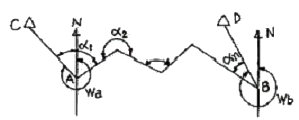
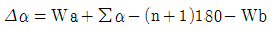
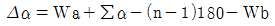
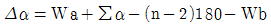
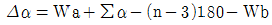
(정답률: 56%)
27. 트래버스 측량에서 좌표 원점을 중심으로 X(N)=150.25m, Y(E)=50.48m 일 때 방위는?
- N 71°25′W
- N 18°34′W
- N 71°25′E
- N 18°34′E
(정답률: 16%)
28. 수평각 측정에서 배각법의 특징에 대한 설명으로 옳지 않은 것은?
- 배각법은 방향각법과 비교하여 읽기오차의 영향을 적게 받는다.
- 눈금의 부정에 의한 오차를 최소로 하기 위하여 n회의 반복결과가 360°에 가깝게 해야 한다.
- 눈금을 직접 측정할 수 없는 미량의 값을 누적하여 반복회수로 나누면 세밀한 값을 읽을 수 있다.
- 배각법은 수평각 관측법 중 가장 정밀한 방법이다.
(정답률: 55%)
29. 광파 거리 측량기를 전파 거리 측량기와 비교할 때 특징이 아닌 것은?
- 안개나 비 등의 기후에 영향을 받지 않는다.
- 비교적 단거리 측정에 이용된다.
- 작업 인원이 적고, 작업 속도가 신속하다.
- 일반 건설 현장에서 많이 사용된다.
(정답률: 73%)
30. 측량한 측선의 길이가 586m이고 정밀도가 1/600 이었다면 이때 오차는 몇 cm인가?
- 95.57cm
- 96.57cm
- 97.67cm
- 98.67cm
(정답률: 66%)
31. 임의의 기준선으로부터 어느 측선까지 시계방향으로 잰 각을 무엇이라 하는가?
- 방향각
- 방위각
- 연직각
- 천정각
(정답률: 76%)
32. 다음 중앙 종거법에 의한 곡선 설치 방법에서 M3의 값은? (단, 곡선반지름 R=300m, 교각 I=70°)
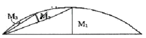
- 2.51m
- 3.49m
- 5.02m
- 6.98m
(정답률: 45%)
33. 항공사진의 사진 촬영 방향에 따른 분류에 속하는 것은?
- 지상 사진 측량
- 비지형 사진 측량
- 위성 사진 측량
- 경사 사진 측량
(정답률: 25%)
34. 등고선의 성질에 대한 설명으로 틀린 것은?
- 같은 등고선 위의 모든 점은 높이가 같다.
- 한 등고선은 도면 안 또는 밖에서 반드시 서로 폐합된다.
- 높이가 다른 두 등고선은 동굴이나 절벽에서 반드시 한점에 교차한다.
- 경사가 급한 곳에서는 등고선의 간격이 좁다.
(정답률: 60%)
35. 면적 계산법 중 수치계산법이 아닌 것은?
- 삼사법
- 좌표법
- 배횡거법
- 지거법
(정답률: 44%)
36. 지표면 상의 지물, 지모에 관한 상호 위치 관계를 평면적, 수직적으로 결정한 측량을 무엇이라 하는가?
- 삼각 측량
- 지형 측량
- 시거 측량
- 토지 측량
(정답률: 68%)
37. 그림과 같은 지형을 평탄지로 만들기 위하여 정지 작업을 할 때 평균 계획고는?
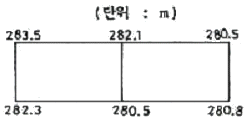
- 281.5m
- 282.5m
- 283.5m
- 284.5m
(정답률: 33%)
38. 정밀 좌표 측정기(comparator)에 의해 관측된 상좌표로부터 사진좌표로 변환하는 과정을 무엇이라 하는가?
- 상호 표정
- 접합 표정
- 내부 표정
- 절대 표정
(정답률: 34%)
39. 고속도로의 완화 곡선으로 주로 사용되는 것은?
- 원곡선
- 3차 포물선
- 클로소이드곡선
- 램니스케이트곡선
(정답률: 45%)
40. GPs의 구성 요소(부분)가 아닌 것은?
- 위성에 대한 우주 부분
- 지상 관제소에서의 제어 부분
- 측량자가 사용하는 수신기에 대한 사용자 부분
- 수신된 정보를 분석하여 재 송신하는 해석부분
(정답률: 59%)
3과목: 임의 구분
41. 일반적으로 축척 1:5,000 지형도에서 주곡선의 간격은 몇 m로 설치하는가?
- 1m
- 5m
- 10m
- 25m
(정답률: 50%)
42. 곡선이 수평면 내에 있는 것을 무엇이라 하는가?
- 평면 곡선
- 수직 곡선
- 횡단 곡선
- 종단 곡선
(정답률: 64%)
43. 항공사진에서 초겨울 낙엽수와 침엽수, 토양의 습윤도 등을 판독하는 주요 요소는?
- 모양
- 질감
- 색조
- 형상
(정답률: 50%)
44. 노선의 위치 선정시 가장 많이 사용되는 측량 결과는?
- 항공사진측량에 의한 지형도
- 평판측량에 의한 지형도
- 등고선법에 의한 지형도
- 종합측량도
(정답률: 23%)
45. 지형도에서 지형의 표시 방법에 해당 되지 않는 것은?
- 등고선법
- 음영법
- 점고법
- 투시법
(정답률: 81%)
46. 곡선 반지름 R=200m의 원곡선 설치에서 l=20m에 대한 편각은?
- 2°51′53″
- 3°24′47″
- 4°06′24″
- 4°57′30″
(정답률: 35%)
47. 수신기 1대를 이용하여 위치를 결정할 수 있는 GPS측량 방법인 1점 측위는 시간 오차까지 보정하기 위해서 최소 몇 대 이상의 위성으로부터 수신하여야 하는가?
- 1대
- 2대
- 3대
- 4대
(정답률: 75%)
48. 사진의 중심점으로서 투영중심으로부터 사진면에 내린 수선의 발, 즉 렌즈의 광축과 사진면이 교차하는 점을 무엇이라 하는가?
- 주점
- 연직점
- 등각점
- 중심점
(정답률: 37%)
49. 사각형 ABCD의 면적은 얼마인가?(단, 좌표의 단위는 m이다.)
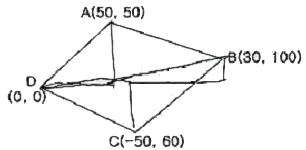
- 4950m2
- 5⑤0m2
- 5150m2
- 5250m2
(정답률: 53%)
50. 지형 공간 정보체계의 자료입력 부분인 것은?
- 키보드
- CPU
- 워크스테이션
- 프린터
(정답률: 46%)
51. 기본측량 행위로 인하여 손실을 받은 자가 있을 때에는 손실보상을 하여야 하는데, 이떄 그 손실을 받은 자는 다음 중 누구와 협의 하여야 하는가?
- 건설교통부장관
- 국토지리정보원장
- 법무부장관
- 시∙도지사
(정답률: 42%)
52. 측량법의 용어 정의 중 “측량성과”를 가장 옳게 설명한 것은?
- 측량에 관한 작업의 기록을 말한다.
- 당해 측량에서 얻은 최종결과를 말한다.
- 기본측량에 관한 측량의 결과를 말한다.
- 공공측량에 관한 측량의 결과를 말한다.
(정답률: 46%)
53. 다음 사항 중 측량업의 종류에 속하지 않는 것은?
- 측지측량업
- 힝공촬영업
- 수치지도제작업
- 항공사진제작업
(정답률: 41%)
54. 기본측량의 측량성과 또는 측량기록을 복제하고자 하는자는 누구에게 신청해야 하는거?
- 건설교통부장관
- 국토지리정보원장
- 경찰장
- 구청장, 시장 또는 군수
(정답률: 57%)
55. 다음 중 중장지명위원회의 위원을 추천할 수 없는 자는?
- 국사편찬위원회 위원장
- 과학기술부장관
- 행정자치주장관
- 문화관광부장관
(정답률: 39%)
56. 기본측량을 위하여 설치한 측량표의 관리자는?
- 시장, 군수
- 시∙도지사
- 건설교통부장관
- 국토지리정보원장
(정답률: 49%)
57. 측량업자가 다른 사람에게 자기의 등록증을 대여할 때 받을 수 있는 조치는?
- 측량업의 등록취소
- 1년이내의 영업정지
- 2년이내의 영업정지
- 3년이내의 영업정지
(정답률: 28%)
58. 다음 중 측량협회의 설립목적과 관게가 가장 먼 것은?
- 측량업자 및 측량기술자등의 품위보전
- 측량에 관한 가숭의 향상
- 회원 상호간의 친목 도모
- 측량제도의 건전한 발전에 기여
(정답률: 60%)
59. 건설교통부장관은 측량용역대가의 기준을 정하고자 할때 누구와 협의하여야 하는가?
- 측량협회장
- 행정자치부장관
- 국토지리정보원장
- 재정경제부장관
(정답률: 18%)
60. 측량법상 우리나라 측량의 원점은?
- 대한민국 경위도원정 및 수준원정
- 대한민국 위도원정
- 대한민국 수준원정
- 대한민국 경위원정
(정답률: 50%)